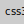
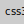

Skills
Languages
Python
C++
JavaScript
 HTML
CSS
Japanese (N5)
HTML
CSS
Japanese (N5)
Machine Learning Engineer • Data Analyst • Web Developer
I’m a 20-year-old engineer from Salem, a culturally rich city in Tamil Nadu known for its textile heritage and strong agricultural roots.
I got into mechanical engineering via counselling, but over time, I found deep interest in tech — especially machine learning, data analytics, and web development. Today, I combine these skills to build practical, people-focused solutions.
I’m driven by my family's resilience and my dream of creating a simpler life surrounded by nature. I value respect above all and welcome any opportunity that allows me to learn and contribute meaningfully.
Simulates weather monitoring using Python and Seaborn.
Groq LLM, FAISS — Ask questions to PDFs using AI-based retrieval with embeddings.
Web App — Convert PDF, images, audio, and video files. Lightweight and privacy-friendly.
OpenCV, CNN — Detects crop diseases from leaf images. Supports rural farmers.
Emotion Recognition — Uses webcam to detect facial emotions and play mood-based songs via Spotify API.
Sree Saravana Niketan Matric Hr. Sec. School
About my schoolKumaraguru College of Technology (Ongoing)
About my college Bachelor's in Mechanical Engineering (Minors in IOT)
CGPA: 8.4